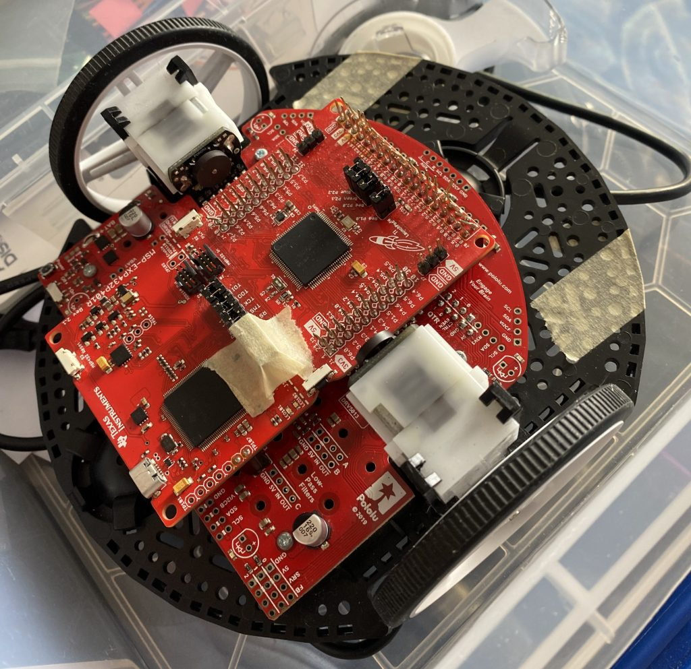
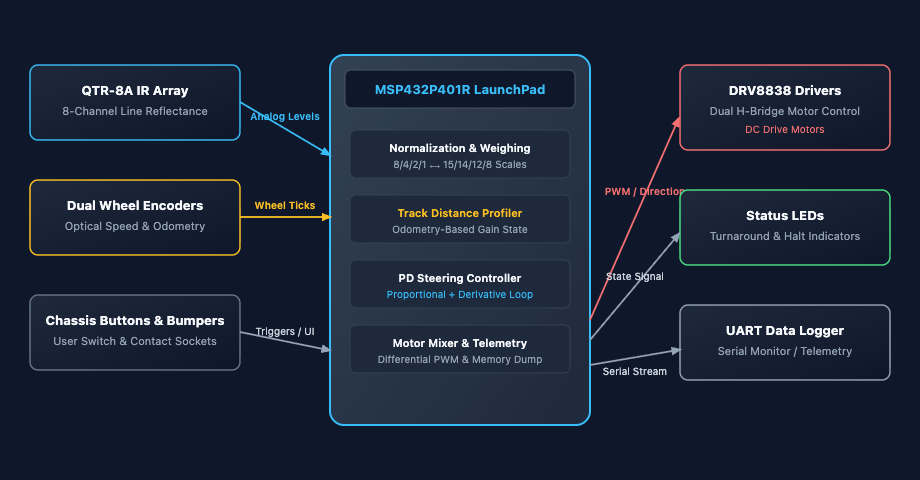
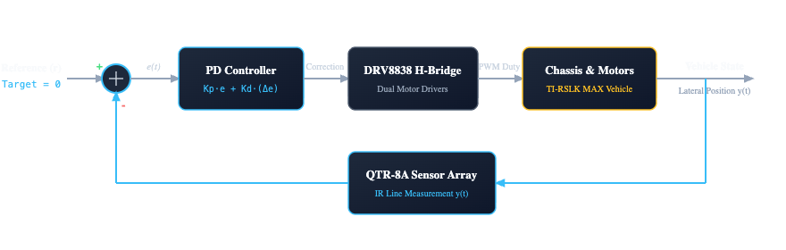
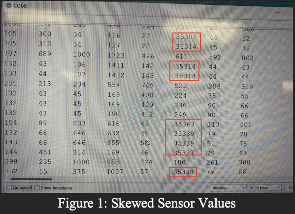
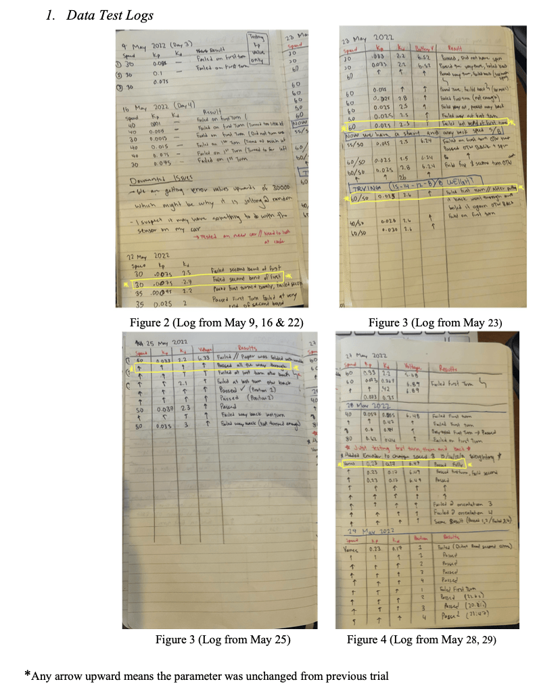
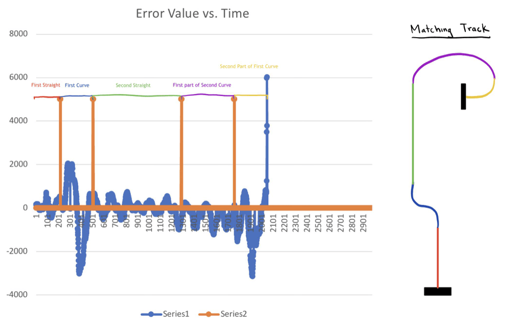
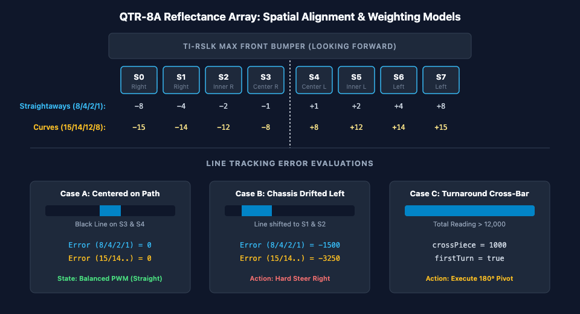
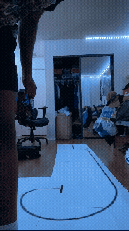

A project in engineering a closed-loop control system for a Texas Instruments Robotics System Learning Kit (TI-RSLK) vehicle programmed to autonomously track a curving line course, completed for Introduction to Electrical Engineering (ECE 3) in Spring 2022 at UCLA.
Background & Motivation
Autonomous ground vehicles operating with limited computing resources need fast, predictable control to stay on course. For differential-drive robots, optical line-following provides a practical test of tracking accuracy and stability at speed.
Traditional proportional-integral-derivative (PID) controllers typically use fixed gains, creating a tradeoff between smooth travel and responsive cornering. Gains tuned for long straights may respond too slowly to tight curves, allowing the robot to drift off its path. More aggressive tuning improves cornering response but can cause rapid side-to-side oscillations on straight sections.
The objective of this project was to develop an autonomous, real-time control pipeline for a Texas Instruments Robotics System Learning Kit (TI-RSLK MAX) vehicle. After receiving the schematic for the track, the engineering challenge focused on replacing static tuning with an odometry-indexed engine and a hybrid weighting matrix, enabling the vehicle to alter its transient response dynamically without human intervention.
System Architecture

The system integrates bare-metal/Energia C++ firmware running on the MSP432 MCU with the chassis sensor array and motor drives:
- Microcontroller: TI MSP432P401R LaunchPad
- Sensors: 8-channel infrared reflectance sensor array (QTR-8A), dual optical wheel encoders, and front bumper switches
- Actuation & Motor Control: Dual DC motors driven by TI DRV8838 low-voltage H-bridge motor drivers via PWM duty-cycle and direction pins
- Diagnostics & Test: Digilent Analog Discovery 2 (oscilloscope/logic analyzer) and custom in-memory telemetry logged over UART
Control Loop

At its core, the main goal was simply keeping the car centered on the black line by minimizing tracking error in real time. We set up the TI-RSLK MAX as a closed-loop PD system where the target was zero deviation (r = 0). An 8-channel IR sensor bar constantly scanned the floor, weighted the readings, and calculated exactly how far off-center the car was (Error = r – y). Our discrete PD loop then figured out the steering correction and fed it to the motor drivers, adjusting wheel speeds on the fly so the car stayed locked onto the tape through straights and sharp turns alike.
Design Implementation
Because the physical setup was fixed at the beginning, most of this project was developing the central control algorithms and maximizing performance through incremental testing.
Key Implementations & Debugging
Sensor Calibration & Integer Underflow Debugging

The 8-channel IR sensor readings were calibrated at runtime against minimum (line) and maximum (surface) values:
During early testing, the car experienced random jolts across the track. Inspecting the serial telemetry revealed sensor readings exceeding 30,000. Because real-world calibration is never perfectly static, slight sensor drift caused values to drop below minVals[i], resulting in negative numbers. Storing these calculations in an unsigned integer buffer triggered a classic integer underflow rollover to >30,000, which skewed the calculated error. Clamping the lower bound and switching to signed data types resolved the issue.
Testing Kp and Kd Parameters

Finding the right Kp and Kd values took a good amount of testing…

And with analysis on the average error for the corresponding track geometry, I was able to make observations on the effect that the parameters, weighting scale, and base speed had on the amount of error in the run.

To evaluate how each setup handled the track geometry, I systematically ran trial sweeps across both weighting matrices at lower baseline speeds (typically 30 to 60) before attempting any high-speed runs. For the 15/14/12/8 scale, dialing in K_p = 0.023 and K_d = 0.17 produced the most consistent line hold through the turns. For the 8/4/2/1 scale, the sweet spot settled around K_p = 0.033 and K_d = 0.3667, which kept the car tracking cleanly along the straight sections with minimal weaving. These parameters established our successful run baseline at slower speeds, leaving the door open to ramp up motor velocity once the core steering behavior was locked down.
Hybrid Error Weighting

A central control problem was balancing straight-line stability with curve tracking. A single weighting matrix produced conflicting trade-offs:
- Linear 8/4/2/1 Scale:
This heavily reduced inner-sensor sensitivity, lowered average absolute error on straights to ~192 and prevented continuous weaving. However, it lacked the responsiveness to clear sharp curves, resulting in understeer and track departures.
- Aggressive 15/14/12/8 Scale:
Kept weights closer across channels, providing the lateral torque needed for sharp curves (symmetrical error envelopes around +/- 3000). However, on straight paths, the high sensitivity caused the vehicle to hunt and oscillate with an absolute average error of ~365.
Instead of choosing one compromise, I designed a hybrid error response that switches scales depending on the track section.
Odometry-Based Gain Scheduling
Using optical encoders on the wheels to track elapsed distance, the firmware divides the run into distinct path zones:
- On Straights: The system activates the
8/4/2/1scale, raises motor PWM speeds up to 170–190, and sets K_p = 0.033, K_d = 0.367 for stiff tracking - On Curves: The system transitions to the
15/14/12/8scale, drops base speeds to 65, and dials gains to K_p = 0.023, K_d = 0.17 to stabilize high radius turns
Results & Takeaways
| Configuration | Straightaway Error | Curve Stability | Run Completion Time |
|---|---|---|---|
| Static 8/4/2/1 Weight | Low (Avg Error: ~192) | Failed (Understeer / DNF) | Incomplete |
| Static 15/14/12/8 Weight | Moderate / Weaving (Avg Error: ~365) | Clean & Stable | 20.8 – 21.6 s |
| Dynamic Hybrid + Gain Scheduling | Low (Avg Error: <200) | Zero spinouts | 14.7 s (~30% faster) |
By engineering an encoder-driven error-weighting algorithm and dynamically tuning a Proportional-Derivative (PD) controller, the car adapted its steering response to whether it was on straightaways or high-radius bends. This approach eliminated line-hunting oscillations on straight sections and prevented spinouts on curves, reducing lap time from over 21 seconds down to 14.7 seconds.

Given that this was one my first “real” engineering projects in undergrad I learned so much about what it means to incrementally test, isolate variables/parameters, and use telemetry from sensors to debug. This hands-on experience fundamentally shaped how I approach engineering today as it bridged the gap between thoery and application.
LESSON LEARNED: Going into the lab, it’s easy to treat software and hardware as clean abstractions…the real world will quickly humble that assumption.
Core Algorithm Reference
<ECE3.h>/////////////////////////////////////////////////////////////////PIN SETUP///////////////////////////////////////////////////////////////const int left_nslp_pin=31; // nslp ==> awake & ready for PWMconst int right_nslp_pin=11; // nslp ==> awake & ready for PWMconst int left_dir_pin=29;const int right_dir_pin=30;const int left_pwm_pin=40;const int right_pwm_pin=39;const int LED_RF = 41;const int LED_LF = 51;const int LED_RB = 58;const int LED_LB = 57;const int BMP0 = 24;const int BMP1 = 25;const int BMP2 = 6;const int BMP3 = 27;const int BMP4 = 8;const int BMP5 = 28;//SENSORSuint16_t sensorValues[8]; // right -> left, 0 -> 7int trueValues[8];int error = 0;//LAB CALIBRATION VALUESuint16_t minVals[] = {552, 575, 668, 506, 506, 739, 575, 552};uint16_t maxVals[] = {1948, 1897, 1832, 920, 1347, 1761, 1687.6, 1948};//HOME CALIBRATION VALUES//uint16_t minVals[] = {549, 589, 669, 506, 483, 713, 549, 549};//uint16_t maxVals[] = {1948, 1911, 1831, 921, 1466, 1784, 1920, 1948};//PID VALUESfloat Kp =.033;float Kd = .3667;float last_error = 0;int speed1 = 50;int speed2 = 30;//SPIN VALUESbool firstTurn = false;bool allBlackLast = false;bool allBlackCurrent = false;//Variable Storageuint16_t sensors[1500][8]; int Variable_Store[1500][2];int loopCount = 0;int correctionSig = 0;int crossPiece = 0;int distance = 0;//Weightbool weight8421 = true;void setup(){ //PIN SETUP////////////////////////////////////// pinMode(left_nslp_pin,OUTPUT); pinMode(left_dir_pin,OUTPUT); pinMode(left_pwm_pin,OUTPUT); pinMode(right_nslp_pin,OUTPUT); pinMode(right_dir_pin,OUTPUT); pinMode(right_pwm_pin,OUTPUT); digitalWrite(left_dir_pin,LOW); digitalWrite(left_nslp_pin, HIGH); digitalWrite(right_dir_pin,LOW); digitalWrite(right_nslp_pin,HIGH); pinMode(LED_RF, OUTPUT); pinMode(LED_LF, OUTPUT); pinMode(LED_RB, OUTPUT); pinMode(LED_LB, OUTPUT); pinMode(BMP0, INPUT); pinMode(BMP1, INPUT); pinMode(BMP2, INPUT); pinMode(BMP3, INPUT); pinMode(BMP4, INPUT); pinMode(BMP5, INPUT); pinMode(PUSH1, INPUT_PULLUP); ECE3_Init(); Serial.begin(9600); // set the data rate in bits per second for serial data transmission delay(1000);}void loop(){ ///////////////////////////////////////////SET STARTING SPD///////////////////////////////////////// int leftSpd = speed1; int rightSpd = speed1; //Set total sensor values int totalSensorValues = 0; // read raw sensor values ECE3_read_IR(sensorValues); // BASED ON CALIBRATION BEGIN CALCULATING CURRENT ERROR for (unsigned char i = 0; i < 8; i++) { //Serial.print(sensorValues[i]); //Serial.print('\t'); // tab to format the raw data into columns in the Serial monitor sensors[loopCount][i] = sensorValues[i]; trueValues[i]= sensorValues[i]; trueValues[i]-=minVals[i]; if (trueValues[i]==0){ trueValues[i]=0; } else{ trueValues[i] = trueValues[i]*1000/maxVals[i]; } if(i!=0 && i!=7) totalSensorValues += sensorValues[i]; } ////////////////////////// //Testing Encoder ////////////////////////// distance = average(); if (distance <= 600){ speed1 = 75; } else if (distance <= 1500){ weight8421 = false; Kp =.023; Kd = .17; speed1 = 65; } else if (distance < 2000){ speed1 = 140; Kd = 0.19; } else if (distance < 3800){ speed1 = 180; Kd = 0.19; } else if (distance < 5200){ weight8421 = true; Kp =.033; Kd = .3667; speed1 = 120; } else if (distance < 6500){ speed1=100; } else if (distance < 7500){ Kp = .038; speed1 = 90; } else if (distance < 8500){ speed1 = 120; } else if (distance < 11500){ weight8421 = true; Kp =.037; Kd = .37; speed1 = 170; } else if (distance < 12400){ weight8421 = false; Kp =.024; Kd = .17; speed1 = 65; } else { Kp =.033; Kd = .3667; speed1 = 190; } ////////////////////////////////////////////////CHECKING FOR ALL BLACK//////////////////////////////////////////////if (totalSensorValues > 12000){ crossPiece = 1000; allBlackCurrent =true;} else{ crossPiece = 0; allBlackCurrent =false;} //AT THE U-TURNif(allBlackCurrent && !(firstTurn) && allBlackLast){turnAround();last_error = 0;}//AT THE ENDelse if (allBlackCurrent && firstTurn && allBlackLast){ StopMotors(); crossPiece = 2000;}else{ ////////////////////////////////////////////////////////////////////////// //IF ITS NOT THE BLACK BAR, DO IT REGULARLY ////////////////////////////////////////////////////////////////////////// if(weight8421){ //USING 8-4-2-1 WEIGHT error =(-8*sensorValues[0]-4*sensorValues[1]-2*sensorValues[2]-sensorValues[3]+sensorValues[4]+2*sensorValues[5]+4*sensorValues[6]+8*sensorValues[7])/4; } else{ //USING 15-14-12-8 WEIGHT error =(-15*sensorValues[0]-14*sensorValues[1]-12*sensorValues[2]-8*sensorValues[3]+8*sensorValues[4]+12*sensorValues[5]+14*sensorValues[6]+15*sensorValues[7])/8; } //FINDING DERIVATIVE FOR ERROR CHANGE float derivative = (error - last_error); //CORRECTIVE STEERING correctionSig = Kp*error + Kd*derivative; rightSpd+=(correctionSig); leftSpd-=(correctionSig); analogWrite(right_pwm_pin,rightSpd); analogWrite(left_pwm_pin,leftSpd); last_error = error;}Variable_Store[loopCount][0] = error;Variable_Store[loopCount][1] = crossPiece;if(loopCount < 1500) loopCount++;allBlackLast = allBlackCurrent;}int average(){ int getL = getEncoderCount_left(); int getR = getEncoderCount_right(); return ((getL+getR)/2);}void turnAround (){ analogWrite(right_pwm_pin,0); analogWrite(left_pwm_pin,0); delay(50); digitalWrite(right_dir_pin,HIGH); analogWrite(left_pwm_pin,150); analogWrite(right_pwm_pin,150); delay(332); analogWrite(left_pwm_pin,0); analogWrite(right_pwm_pin,0); digitalWrite(right_dir_pin,LOW); delay(50); //Say that its finished its first turn firstTurn = true;}void StopMotors(){ analogWrite(left_pwm_pin, 0); analogWrite(right_pwm_pin, 0); digitalWrite(LED_RF, HIGH); //turn on yellow right front LED while(true){ if(!digitalRead(PUSH1)){ digitalWrite(LED_RB, HIGH); for(int i = 0; i< 1500; i++){ for(int k = 0; k< 1; k++){ Serial.print(Variable_Store[i][k]); Serial.print('\t'); } Serial.println(Variable_Store[i][1]); }// end of for i loop /* //PRINITNG SENSOR VALUES for(int i = 0; i< 1500; i++){ for(int k = 0; k< 7; k++){ Serial.print(sensors[i][k]);Serial.print('\t'); } Serial.println(sensors[i][7]); }*/ digitalWrite(LED_RB, LOW); } // end of if(!digitalRead(PUSH1)) }// end of while(true) }// end of void StopMotors